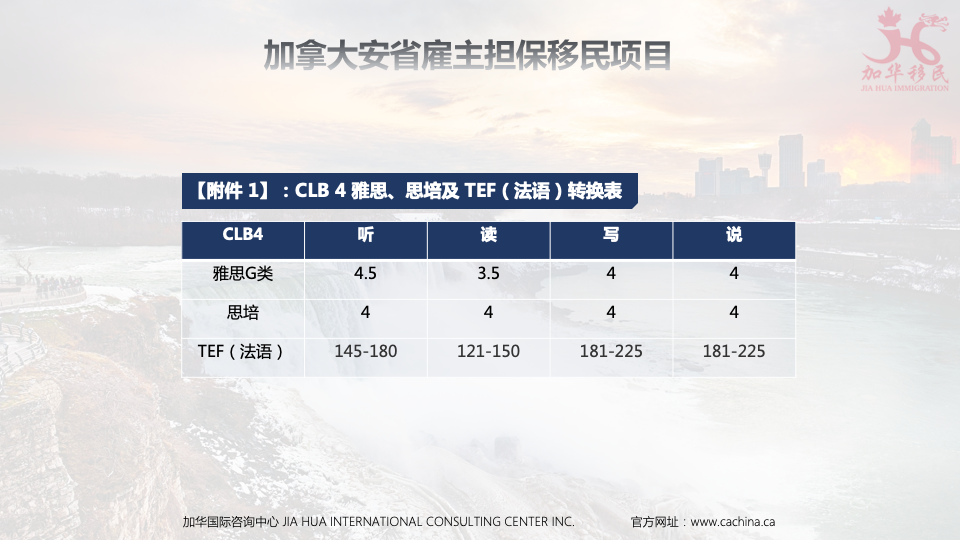
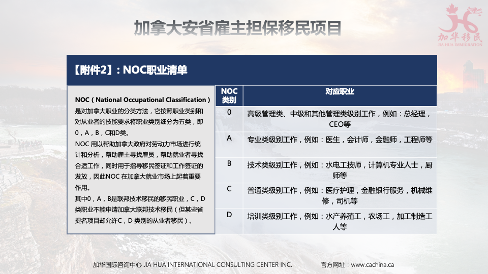

安省简介
安大略省（Ontario）位于加拿大的东部，面积约100万平方公里，加拿大的首都渥太华也在安大略省。根据2020年统计数据显示，安大略人口约有1475万，是加拿大人口最多的省份。安大略省是移民组成的大省，来自全世界的众多的移民，特别是前往大多伦多地区的移民，令该省的文化更加多样化。位于安大略湖的西北部的多伦多，是安大略省的省会、加拿大的第一大城市，也是金融和工商业的国际大都市。
气候：安大略省南部为湿润的大陆性气候，冬季寒冷、夏季湿热；北部属亚北极气候。南北部巨大的水体调节着气候，故冬夏两季气温不太低或太高，秋冻来的晚，昼夜温差相对不大。一年中气温最低的当数1月份，最高的是7月份。1月份平均气温，东部的渥太华河流为-13°。
教育：安大略省是加拿大大学最多的省份，如2017年麦考林加拿大大学医博类排名第2位的多伦多大学、排名第4位的女皇大学（也称皇后大学）、排名第6位的麦克马斯特大学、第8位的西安大略大学；综合类排名第2位的滑铁卢大学、排名第4位的圭尔夫大学都是一流的高等学府。多伦多大学的医科、麦克马斯特大学的化学、西安大略大学的商科和医学、圭尔夫大学的农学、女皇大学的工程学和滑铁卢大学的计算机科学，都是世界闻名的学科。
什么是安省提名雇主担保项目？
安大略省省提名项目，简称 OINP（即 Ontario Immigrant Nominee Program）。安省雇主担保移民（Employer Job Offer）是在安省省提名移民OINP类别下的一个重要的子类别移民方式，是指达到一定规模的企业在聘用员工后，愿意担保这个员工，那么该员工就有机会通过这个雇主的担保直接拿到安省的提名证书，从而直接申请移民。
项目特点
安省雇主担保移民的主要特点是门槛低。有了安省雇主担保提名证书，不需参与Express Entry打分，没有硬性的学历、语言要求，资产要求。
但实际上这类移民对申请人的工作经验、专长和资历有一定要求，对雇主和工作的真实性考察很严格，每年也有名额的限制。
安省雇主担保移民主要分为三种类型：
1. 外国劳工类 OINP- Foreign Worker Stream
•安省省提雇主担保-外国劳工类主要针对的是居住在海外（对于加拿大是海外，比如居住在中国、美国等国）的技术工作者，基本条件是需要拿到全职无限期的工作Offer，且雇主符合安省要求。
2. 留学生类 OINP- International Student Stream
•安省省提雇主担保-国际学生类主要针对的是曾在加拿大有留学经历，拿到正规加拿大院校毕业文凭的人士。
3. 紧缺技工类 OINP- In-Demand Skills Stream
•安省省提雇主担保-紧缺职业类，这里面“紧缺职业”和澳大利亚技术移民的紧缺职业以及早期加拿大技术移民的紧缺职业概念不同。它的概念要窄很多。安省省提雇主担保的紧缺职业，仅包含NOC C、D类的职业
外籍劳工移民项目
1. 简介：
雇主担保外籍劳工移民项目，适用于已入境和尚未进入加拿大的申请人。给予拥有0、A、B类工作雇主信（Job Offer）的工作者一个定居安大略的机会和申请途径。
2. 项目特点：
- 无学历要求
- 申请周期较短
- 无语言要求
- 境内外皆可申请
外籍劳工移民项目申请要求
1. 申请人的要求：
- 过去五年内，至少有两年相关的全职工作经历（或相等工时的兼职），或能出具相关行业的资质证书。无需雅思成绩， 证明具有长期在安省工作生活的意向和合法的身份状态。
2. 雇主的要求：
•运营要求：企业运营3年以上，在安省有实际办公地点，符合安省法规
•年收入及雇员要求（雇员需要加拿大永居或公民）：
•大多地区（Greater Toronto Area），最近财年营业额超过100万加币，长期全职雇员达到5个
•大多以外地区，最近财年营业额超过50万加币，长期全职雇员达到3个
3.工作职位的要求：
-NOC 0，A，B 类长期全职雇主offer，满足最低工资标准
留学生移民项目
1. 简介：
Express Entry打分不够怎么办？安省提名雇主担保项目，需入池打分，安省门槛最低：加拿大2年大专，匹配真实工作，成功率非常高，国际留学生申请枫叶卡的更好途径。
2. 项目特点：
不用考雅思，无需工作经验，申请周期短，该项目不属于EE 范畴。
3. 申请条件优势：
加拿大2年大专就可申请，安省定居生活便利，工作机会多。
留学生移民项目申请要求
1. 申请人的要求：
-加拿大公立2年制大专或本科，1年制研究生文凭的学生。 在毕业两年内提交申请，无需工作经验，无需雅思成绩， 只需证明具有长期在安省工作生活的意向和合法的身份状态。
2. 雇主的要求：
•运营要求：企业运营3年以上，在安省有实际办公地点，符合安省法规
•年收入及雇员要求（雇员需要加拿大永居或公民）：
•大多地区（Greater Toronto Area），最近财年营业额超过100万加币，长期全职雇员达到5个
•大多以外地区，最近财年营业额超过50万加币，长期全职雇员达到3个
3.工作职位的要求：
-NOC 0，A，B 类长期全职雇主offer，满足最低工资标准
紧缺技工移民项目
1.简介：
安省提名雇主担保紧缺技工类移民针对于有建筑业和农业部 门相关经验的申请人，根据这些行业的劳动力市场需求邀请 他们进行申请。
2.项目特点：
- 学历要求低
- 申请周期短
- 语言要求低
- 工资收入高
3.申请条件优势：
高中学历就可申请，安省定居生活方便，工作稳定
紧缺技工移民项目申请要求
1.申请人的要求：
高中或以上学历，在过去3年里有1年相关全职经验，持有该职业所需要的必要证书，英语或法语达到CLB4水平，需证明具有长期在安省工作生活的意向和合法的身份状态。
2.雇主的要求：
•运营要求：企业运营3年以上，在安省有实际办公地点，符合安省法规
•年收入及雇员要求（雇员需要加拿大永居或公民）：
•大多地区（Greater Toronto Area），最近财年营业额超过 100万加币，长期全职雇员达到5个
•大多以外地区，最近财年营业额超过50万加币，长期全职 雇员达到3个
3.工作职位的要求：
安省紧缺职业技工，长期全职雇主offer，工资达到安省相应标准（Median wage）
安省提名雇主担保紧缺技工职位包含如下：
NOC 7441 住宅/商业安装服务 - Residential and commercial installers and servicers
NOC 7521 重型设备操作（非起重机）- Heavy equipment operators (except crane)
NOC 8431 普通农场工 - General farm workers
NOC 8432 温室苗圃工 - Nursery and greenhouse workers
NOC 8611 收割劳工 - Harvesting labourer
NOC 7611 建筑技工助手和劳工 - Construction trades helpers and labourers
NOC 9462 工业屠宰、切肉、家禽处理等加工 - Industrial butchers, meat cutters, poultry preparers, related workers
雇主担保项目申请流程
1. 签订合同进行评估
2. 准备相关文件和支持材料
3. 匹配雇主
4. 雇主提供长期工作信函
5. 注册OINP账号，提交申请
6. 审核通过，获得省提名
7. 准备移民申请资料
8. 递交移民申请
9. 获得档案号，体检通知
10. 获得移民签证
11. 登陆加拿大获枫叶卡
安省雇主担保移民项目办理周期
整体办理周期： 2-2.5年
- 安省雇主匹配 ：3个月
- 雇主打广告：1个月
- 安省省提名审理：90-120天
- 联邦审理：15-19个月（EE审理时间6个月）
CLB4对应雅思、思培及TEF（法语）分数

NOC职业列表分类简述


发表评论
评论列表（条）